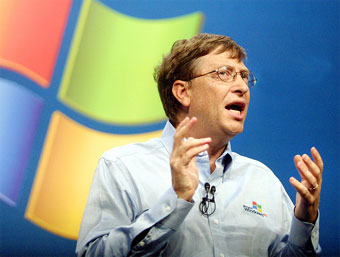

(William Henry Gates III; Seattle, Washington, 1955) Informático y empresario estadounidense, fundador de Microsoft. La fortuna de este precoz programador, que no llegó a terminar sus estudios y que a los 31 años era ya multimillonario, procede del éxito arrollador de su sistema operativo, el MS-DOS (1981), que evolucionaría hasta convertirse en el popular Windows 3.1 (1992) y daría lugar a las sucesivas versiones de este sistema operativo, omnipresente hasta nuestros días en la inmensa mayoría de los ordenadores portátiles y de sobremesa.
El negocio del software
A principios de la década de 1970, la invención del microprocesador permitió abaratar y reducir el tamaño de las gigantescas computadoras existentes hasta entonces. Era un paso decisivo hacia un sueño largamente acariciado por muchas empresas punteras en el sector tecnológico: construir ordenadores de tamaño y precio razonable que permitiesen llevar la informática a todas las empresas y hogares. El primero en llegar podría iniciar un negocio sumamente lucrativo y de enorme potencial. Era impensable que una empresa como Microsoft, dedicada solamente al software (sistemas operativos y programas) pudiese jugar algún papel en esta carrera entre fabricantes de hardware, es decir, de máquinas.
Del MS-DOS a Windows

Aún existían otra opciones, pero se quedaron en minoritarias: gracias a su bajo coste, la combinación PC más MS-DOS acabó copando el mercado y convirtiéndose en el estándar. Mientras los fabricantes de ordenadores intentaban reducir costes, entregados a una guerra de precios de la que nadie pudo sacar una posición dominante, una empresa de software, la de Bill Gates, se hizo con prácticamente todo el mercado de sistemas operativos y buena parte del de programas.A partir de ese momento, la expansión de Microsoft fue espectacular. Y no sólo porque los PC necesitaban un sistema operativo para funcionar, sino también porque los programas y aplicaciones concretas (un procesador de textos, un hoja de cálculo, un juego) se desarrollan sobre la base de un sistema operativo en concreto, y ese sistema era el MS-DOS. Las distintas empresas de software (y entre ellas la misma Microsoft) podían desarrollar, por ejemplo, distintos procesadores de textos, compitiendo entre ellas para agradar al usuario. Pero como la inmensa mayoría de usuarios tenía MS-DOS, desarrollaban programas para funcionar con MS-DOS, y acababan por hacer un favor a Microsoft, que podía presumir de que sobre su sistema operativo podían funcionar todos los programas imaginables: los suyos y casi todos los de la competencia. Esa retroalimentación viciosa era el fabuloso activo de Microsoft, y Bill Gates supo conservarlo.